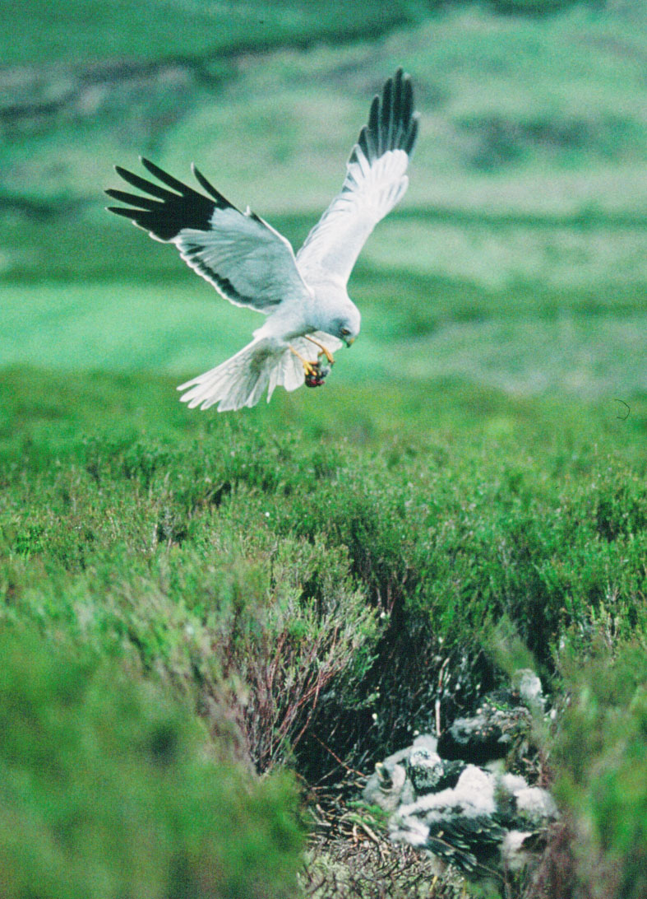
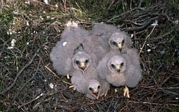
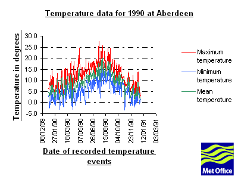

News Release - Thursday 15 June 2000

A project to study the weather conditions that determine the numbers of chicks successfully reared by hen harriers is the thousandth to access a national database of weather and atmospheric measurements.
Dr Steve Redpath and Fiona Leckie at NERC funded CEH (Centre for Ecology and Hydrology) - Banchory - have joined forces with colleagues at the RSPB to look at the relationship between hen harrier breeding successes and weather parameters in Scotland. They will be accessing the British Atmospheric Data Centre (BADC) to get the Met Office rainfall and temperature data for Scotland since 1988, and matching this information to the known breeding successes and failures gathered by the RSPB.
"In Europe, hen harriers have a wide distribution, breeding from northern Scandinavia to southern Spain. Over this geographical range they clearly encounter large variations in weather conditions from hot, arid conditions in the south to cold, wet conditions in the north-west," explained Dr Redpath. "In Spain, for example, it has been shown that harriers produce more young in wet years and this is thought to occur because rainfall leads to an increase in food abundance in these arid areas. In Scotland, however, we suspect that the converse is likely to be true with poorer breeding success in relatively wet years.

The RSPB
has collected detailed data on harrier breeding success in Scotland
from 1988 to 1995 and the project will investigate how breeding
success varies with Met Office data from BADC
on temperature and rainfall between different regions of Scotland
and over the 8 years of the study. In addition, the team has also
been watching harrier behaviour during the breeding season in
one area of south-west Scotland from 1993 to 1999. "We set
up hides close to harrier nests so that we could watch how long
females spent brooding their chicks and how often the chicks were
fed by the parents. Again, using Met Office data from BADC,
we plan to correlate these patterns with hourly data on temperature
and rainfall" explained Dr Redpath.
The hope is that this detailed data on a nest by nest basis will
indicate the mechanism of how temperature and rainfall influence
harrier productivity. The long term aim of the project is to combine
the data with other researchers elsewhere in Europe to develop
a predictive model to see whether scientists can start to understand
hen harrier distribution patterns around Europe and possibly elsewhere
in the world.
 The BADC holds many atmospheric
datasets totalling more than a terabyte of data in approximately
1.5 million files. Data from a variety of sources - including
satellites, balloons, aircraft, computer models of the atmosphere
and also ground-based instruments from the Met Office - are accessible free
to non-commercial research projects through the British
Atmospheric Data Centre (BADC, which is one of the NERC Designated Data Centres, hosted by the
Rutherford Appleton
Laboratory (RAL) in Oxfordshire. Dr Sam Pepler at RAL runs
the project. "The interface to these datasets is one of the
easiest possible", he said. "Once a user has been approved,
they access the data via the web directly, using an id and password,
and if they need assistance accessing or interpreting the data,
we have scientists on hand to help them". The BADC services
are centred around on-line access to data through the world-wide-web
at http://www.badc.rl.ac.uk/ .
The BADC holds many atmospheric
datasets totalling more than a terabyte of data in approximately
1.5 million files. Data from a variety of sources - including
satellites, balloons, aircraft, computer models of the atmosphere
and also ground-based instruments from the Met Office - are accessible free
to non-commercial research projects through the British
Atmospheric Data Centre (BADC, which is one of the NERC Designated Data Centres, hosted by the
Rutherford Appleton
Laboratory (RAL) in Oxfordshire. Dr Sam Pepler at RAL runs
the project. "The interface to these datasets is one of the
easiest possible", he said. "Once a user has been approved,
they access the data via the web directly, using an id and password,
and if they need assistance accessing or interpreting the data,
we have scientists on hand to help them". The BADC services
are centred around on-line access to data through the world-wide-web
at http://www.badc.rl.ac.uk/ .
Further information from :
Dr Sam Pepler, BADC manager, RAL, Tel: 01235 44 6538, Email: badc@rl.ac.uk
Dr Stephen Redpath, CEH Banchory, Tel: 01330 82 63 00
Mrs Jacky Hutchinson, Press Officer, RAL, Tel: 01235 44 6482
Web address giving information about the BADC databases: http://www.badc.rl.ac.uk/